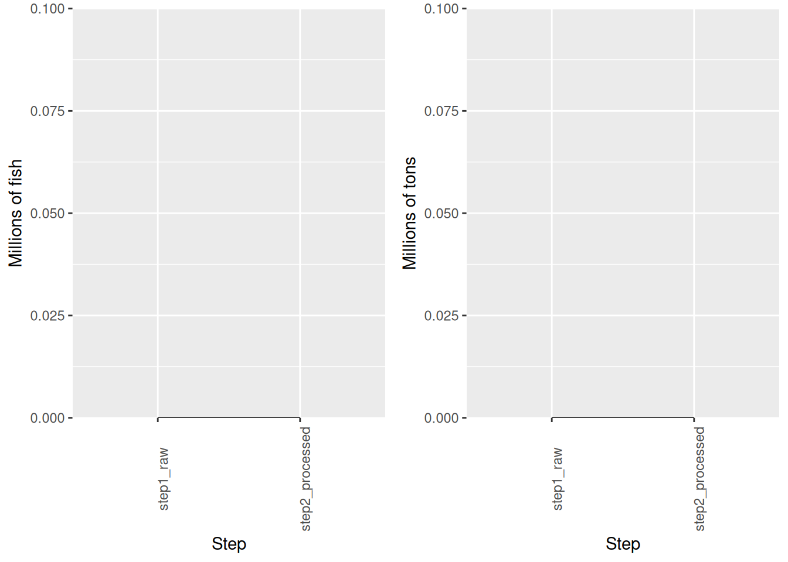

3 Analyse of the processing of the data
The following table recap all the treatment done on the mapped and standardized rawdata provided by tRFMOs.
Step | Millions of tons | Millions of fish | Difference (in % of tons) | Difference (in % of fish) | Conversion factors (kg) | Step number |
|---|---|---|---|---|---|---|
step1-raw | 0 | 0 | -100 | -100 | 136.36 | 1 |
step2-processed | 0 | 0 | 2 |
## NULL
Figure 3.1: Evolution of captures in tons and number of fish during the process